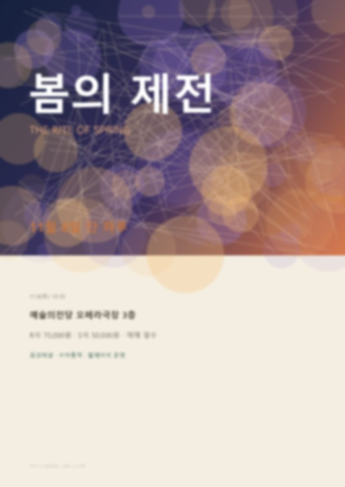
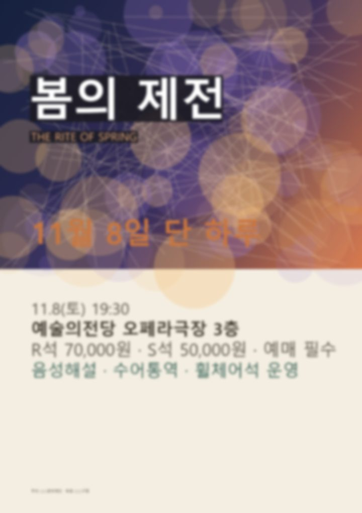

내 포스터, 누구에게나 잘 보일까요?
접근성 기준을 몰라도 괜찮아요. 포스터 PSD를 올리면 눈이 잘 안 보이는 사람에게 어떻게 보이는지 보여주고, 어디를 어떻게 고치면 되는지 하나씩 알려드려요.
설치 없이 브라우저에서 바로 써요. 파일은 서버로 올라가지 않아요.


접근성, 어디서부터 고칠지
몰라도 괜찮아요
무엇을 기준으로 어떻게 고쳐야 할지 모르는 디자이너를 위한 도구예요.
-
기준은 도구가 재요
글자 크기·대비 같은 기준(WCAG)을 대신 재고, 결과는 쉬운 말로 알려드려요.
-
고친 모습을 먼저 봐요
원본 옆에 고친 모습을 놓고, 디자인이 어떻게 바뀌는지 보고 골라요.
-
디자인은 최대한 지켜요
밝기·크기·배경 띠처럼 작은 변화로 고쳐요. 원본 파일은 건드리지 않아요.
시각 정보를 받아들이기 어려운
세 사람의 눈으로 봐요
-
보통 눈11월 8일 단 하루시력 0.3으로 보면11월 8일 단 하루시력 0.3 이하저시력인 사람
안경을 써도 잘 안 보여요. 글자가 작거나 배경과 색이 비슷하면 가까이 가도 못 읽어요.
-
보통 눈마감접수 중녹색맹으로 보면마감접수 중색을 다르게 봐요색각이상인 사람
빨강과 초록처럼 색만 다르게 강조한 정보는 구분하지 못할 수 있어요.
-
보통 눈가을 음악회시청 앞 광장11월 8일무료 입장저녁 7시시야 10°로 보면가을 음악회시청 앞 광장11월 8일무료 입장저녁 7시시야 10° 이하시야가 좁은 사람
한 번에 보이는 범위가 좁아요. 정보가 흩어져 있으면 찾다가 놓쳐요.
휴대폰으로 보는 SNS 이미지,
시력에 따라 이만큼 커야 읽혀요
휴대폰 화면을 35cm에서 볼 때, 화면 위 글자 높이예요. 시력표 글자(5′)를 시력으로 나누고, 편하게 읽는 여유 2배를 곱해 계산했어요.
- 7:1저시력자를 위한 글자·배경 대비WCAG 1.4.6
- 10°시각장애로 판정하는 시야보건복지부 장애정도 판정기준
- 3가지함께 확인하는 색각이상 (적·녹·청)Machado 외, 2009
3단계면 끝나요
- 준비
포스터 용도와 보는 사람을 고르고 PSD를 올려요.
- 고치기
잘 안 보이는 글자를 알려드려요. 고친 모습을 원본 옆에서 보고 골라요.
- 받기
고친 포스터를 PSD·이미지로 받아요. 필요하면 큰 글씨 안내문도 만들어요.
자주 묻는 질문
포토샵이 꼭 있어야 하나요?
아니요. 브라우저에서 PSD 파일만 올리면 검사하고 고칠 수 있어요. 고친 포스터는 PSD·PNG·JPG로 받아요. 받은 PSD는 포토샵에서 열어 마무리하면 돼요.
제 포스터 파일이 어딘가로 올라가나요?
아니요. 파일은 서버로 보내지 않고 지금 쓰는 브라우저 안에서만 읽고 고쳐요. 검사 결과도 따로 저장하지 않아요.
원본 PSD가 바뀌나요?
아니요. 원본은 그대로 두고, 고친 모습은 새 파일로 받아요. 마음에 들지 않으면 받지 않으면 그만이에요.
예술적인 포스터도 검사할 수 있나요?
네. 처음에 포스터 용도를 '예술'로 고르면 그림처럼 쓴 글자는 꼭 고칠 곳이 아니라 '참고'로만 알려드려요. 다만 날짜·장소 같은 꼭 필요한 정보는 대체텍스트나 큰 글씨 안내문으로 함께 전해 달라고 알려드려요.
무엇을 기준으로 검사하나요?
글자와 배경의 대비는 웹 접근성 기준(WCAG)을 써요. 보통 4.5:1, 저시력자에게는 7:1이에요. 글자 크기는 보는 거리에서 글자가 눈에 보이는 크기로 재요. 색각이상은 Machado 외(2009) 모델로, 좁은 시야는 보건복지부 장애정도 판정기준(10°·5°)으로 확인해요.
일부 기준값은 아직 정하는 중이에요. 공식 인증 도구는 아니고, 고칠 곳을 찾도록 돕는 도구예요.
어떤 PSD를 올릴 수 있나요?
포토샵 PSD 파일(.psd)이요. 글자가 텍스트 레이어로 남아 있어야 검사할 수 있어요. RGB와 CMYK 모두 돼요. AI·PDF·Figma 파일은 아직 안 돼요.
검사하지 못하는 글자도 있나요?
네. 이미지로 합친(래스터화한) 글자, 사진이나 그림 속 글자, 모양(셰이프)으로 바꾼 글자는 읽지 못해요. 이런 글자는 직접 확인해 주세요.